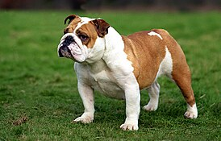

Собаки: верные друзья и преданные спутники жизни
Собаки — одни из самых преданных и умных животных, которые сопровождают человека на протяжении тысячелетий. Их разнообразие пород и характеров делает их особенными существами в нашем мире.
Золотистые ретриверы — одни из самых популярных пород благодаря своей дружелюбной натуре и высокой социализации. Они отлично подходят для семей с детьми и являются отличными компаньонами во всех жизненных ситуациях.
Английские бульдоги — это мощные и спокойные собаки с уникальной внешностью. Они известны своим чувством юмора и преданностью своим владельцам. Бульдоги отлично подходят для жизни в городских условиях.
Немецкие овчарки — это одни из самых умных пород собак, которые известны своей преданностью и высоким интеллектом. Они успешно применяются в различных служебных и защитных задачах.

Такса — это порода собак с длинным телом и короткими ногами, которые известны своим остроумием и игривостью. Они являются прекрасными компаньонами для активных людей.
Важность собак в жизни людей
Собаки играют значительную роль в жизни людей не только как домашние питомцы, но и как помощники в различных сферах. Они используются в служебных целях, таких как охрана, спасение и терапия.
Благодаря своей высокой социализации и преданности, собаки становятся незаменимыми спутниками в различных жизненных ситуациях. Их способность к обучению и пониманию делает их особенно ценными для людей.